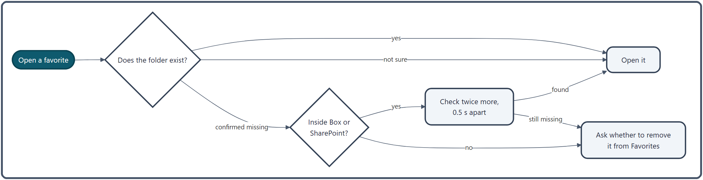

Favorites¶
Add the folders and files you use often to the Favorites view in the nav pane, so you can open them in one click. You can sort them into virtual folders. This article also covers what happens when a favorite's target disappears, and how favorites travel to another PC or account.
What you can do¶
| To do this | Do this |
|---|---|
| Add the current folder | ★ in the address bar, or Ctrl + D |
| See whether the current folder is already a favorite | The ★ in the address bar is filled in when it is |
| Add a selected file or folder | Right-click → "More actions ▶" → "Add to favorites", or drag it to the Favorites view |
| Open one | Double-click a favorite (middle-click for a new tab) |
| Organize them | Create virtual folders and drag items into them |
| Find one | Type in the Favorites view's search box |
| Add frequently opened folders automatically | ⚙ → "Add frequently used folders automatically" |

Favorites are listed in the nav pane's Favorites view. On first launch, Desktop, Downloads and Documents are already there.
How to use it¶
Adding¶
- ★ in the address bar /
Ctrl + Dadds the folder you are looking at. A dialog asks for a name and an optional description; once added, the nav pane switches to the Favorites view and briefly highlights the new entry. Nothing is added if the folder cannot be found or is already a favorite. While the open folder is a favorite, the ★ is filled in (it follows straight away wherever you add or remove the favorite, such as deleting it in the Favorites view). - Right-click: in the file list, right-click → "More actions ▶" → "Add to favorites" adds the file or folder you right-clicked (it reads "Remove from favorites" if it is already there).
- Drag: drag from the file list or File Explorer onto the Favorites view to add it directly (no name dialog).
- Add all tabs in this pane to favorites: from a tab's right-click menu, adds the folders of all the pane's tabs, grouped in a new virtual folder (see Tabs).
- Import from Quick Access: ⚙ → "Import Explorer Quick Access" brings File Explorer's Quick Access items into a virtual folder named "インポート" (Import). Items already in Favorites are skipped, and if there is nothing new, no Import folder is created.
- Add frequently used folders automatically (off by default): turn it on under ⚙, and a folder is added to a virtual folder named "Frequently Used" once, the moment it has been opened exactly the "Threshold" number of times (20 by default, 2 at least). Its description notes how many times it was opened. Because it happens only at that exact count, an automatically added favorite you delete does not come back.
Organizing¶
- Virtual folders: right-click an empty part of the Favorites view or any item → "New Folder" to create a virtual folder at the bottom (it is named "New Folder", "New Folder (2)" and so on). Select an item and press
Insertto create one right below it. Virtual folders can be nested as deep as you like. - Reordering and moving in: drag an item onto the top or bottom edge of a row to put it before or after, or onto a virtual folder to put it inside.
- Description: right-click → "Edit description" to add a note such as "weekly report". It appears quietly next to the name, and hovering shows the full path and description.
- Icon: choose one of 64 icons from the right-click menu (for virtual folders and ordinary items alike).
- Color tag: pick one of 7 colors from the right-click menu to mark an item with a bar at the left of its name and a light tint across the row. Colors are adjusted to stay readable on the current theme.
- Top-level virtual folders are drawn as bands across the nav pane, like category headings. Items inside them are joined by thin lines that show the hierarchy.
- Deleting: right-click → "Delete" or press
Delete. With "Show delete confirmation" on under ⚙, you are asked first. A virtual folder with favorites inside always asks, whatever that setting, and says how many favorites are inside, because they are deleted along with it and this cannot be undone. - Expand All / Collapse All: right-click an empty part of the Favorites view.
- Favorites related to the current folder light up: favorites that are the same as, above or below the folder open in the active pane get an accent bar at the left and a faint background (opening
C:\work\projectAlights upprojectA\docsinside it, for example). It follows folder moves, tab switches and pane switches.
Opening¶
- Double-click (or
Enter): a folder opens in the active pane, and a file opens in its associated app. A virtual folder expands or collapses. A shortcut (.lnk) to a folder opens in a new tab. - Middle-click: opens in a new tab in the active pane (for a file, the folder containing it).
- Right-click → "Open in A Pane" / "Open in B Pane": opens a folder in that pane.
- Drag to a pane: dropping on the file list or the tab bar opens it too (see Drag & Drop). Dropping on File Explorer or the desktop creates a shortcut, and the folder itself does not move.
- Keys:
F2renames,Deletedeletes,Insertcreates a virtual folder,Ctrl + Fjumps to the search box, andEscreturns to the file list.
Finding¶
Type in the search box at the top of the Favorites view to filter the list.
- Use the search-mode toggle to search names and descriptions (the default) or full paths and descriptions.
- Letter case is ignored. From 4 characters on, one typo is tolerated (two from 8 characters on).
tag:followed by a color's English name (such astag:red) shows only items with that color tag.
Changing the view¶
The buttons at the top of the Favorites view switch these:
- Frequent: shows 3–15 (by default 5) of your most-opened items above the list, ranked 60% by how often and 40% by how recently (over 30 days) you opened them. Hidden when you have 5 or fewer favorites, in alphabetical order, and while searching.
- Recently Added: up to 5 items added in the last 7 days, newest first.
- Sort (Tree / Alphabetical): nested virtual folders, or a single alphabetical list without them.
- Lock: see "Lock" below.
-
⚙ (Favorites Settings):

font and text sizes; whether to show descriptions, tree lines, the access-count bar, item-count badges and access counts; delete confirmation; lock; automatic adding; and "Organize favorites with AI", "Backup favorites to Excel" and "Import Explorer Quick Access".
Lock¶
Locking stops operations that change how your favorites are arranged, so nothing gets messed up by accident.
| Blocked while locked | Still allowed while locked |
|---|---|
| Creating or deleting virtual folders (and "Remove from favorites" in the file list) | Adding with ★, Ctrl + D or the right-click menu |
| Reordering or adding by drag | Changing names, descriptions, icons and color tags |
| "Add all tabs in this pane", importing Quick Access, automatic adding, AI organizing | Deleting a missing item when asked |
While locked, the menu items for blocked operations cannot be clicked. If you try to add by dragging, the status bar tells you why and the padlock flashes to prompt you to unlock.
Organizing with AI¶
Open it from ⚙ → "Organize favorites with AI". It first shows the total count, how many items can't be found, how many virtual folders there are and how many items sit in none, then offers:
- Remove missing items only: no AI involved; removes every item whose target is gone.
- Organize with AI: the AI reads how your favorites are arranged and suggests removing missing items, grouping related ones, sorting, and adding search tags. You review the changes before applying them, and you can give instructions such as "group by project". Tags are appended to the description as "AI: tag1, tag2".
The free version allows 2 runs a day.
Backing up to Excel¶
⚙ → "Backup favorites to Excel" writes your favorites to an Excel file (named favorites_backup_date.xlsx by default). It has 6 columns: No, Group, Display name, Full path, Type and an Open link, with groups written as "parent > child".
How it works¶
Favorites that can't be found¶

- At startup, every favorite is checked in the background. Missing items are shown half-transparent with a ⚠ after the name; items that are found show nothing extra.
- When you open one, the app checks that the folder exists, waiting at most 2 seconds (0.3 seconds for network folders). If it cannot tell, it opens the folder anyway, so a slow network does not keep you out just because the check timed out.
- When it is confirmed missing, you are asked whether to remove it from Favorites (""name" not found. Remove from favorites?"). Answering yes removes it even while Favorites are locked. Inside Box, SharePoint and OneDrive (work or school), the app allows for files being fetched on demand: it checks twice more, 0.5 seconds apart, before asking.
- Favorites pointing into another Windows account's folders are never offered for removal, even if they cannot be opened (see "Taking favorites to another PC or account" below).
Saving and recovery¶
- Favorites are stored in
data\settings.json. They are written 0.8 seconds after changes stop, in the order "write a temporary file → move the old file aside → swap in", so a crash mid-write never leaves a broken file. - About 5 minutes after a change, a generation copy named
settings_timestamp.jsonis also made in thebackupsfolder. You can go back to any of them in Settings → Recovery (see Settings Backup & Recovery). - If
settings.jsoncannot be read, the app tries the backup (.bak), then the newest generation copy, then the defaults. The unreadable file is kept as.corrupt-timestamp. - Reordering by drag is written immediately; if that fails, the order goes back to how it was before the drag.
Taking favorites to another PC or account¶
So the same ZenithFiler folder can be used from another Windows account or PC, favorites inside Box, OneDrive and SharePoint synced folders are stored in an account-independent form.
- On saving, a path such as
C:\Users\<name>\Box\…is rewritten relative to%USERPROFILE%,%OneDrive%or%OneDriveCommercial%(the longest match first). - On loading, it is expanded to the same place in the account you are using.
- Places whose contents differ per account, such as Desktop and Documents, are not rewritten and keep pointing where they did.
Related¶
- Nav Pane — the Favorites view, plus the tree and history
- Address Bar and Breadcrumb — adding with ★
- Drag & Drop — dropping favorites on panes or File Explorer
- Working Sets — saving combinations of tabs
- Settings Backup & Recovery — going back to earlier settings